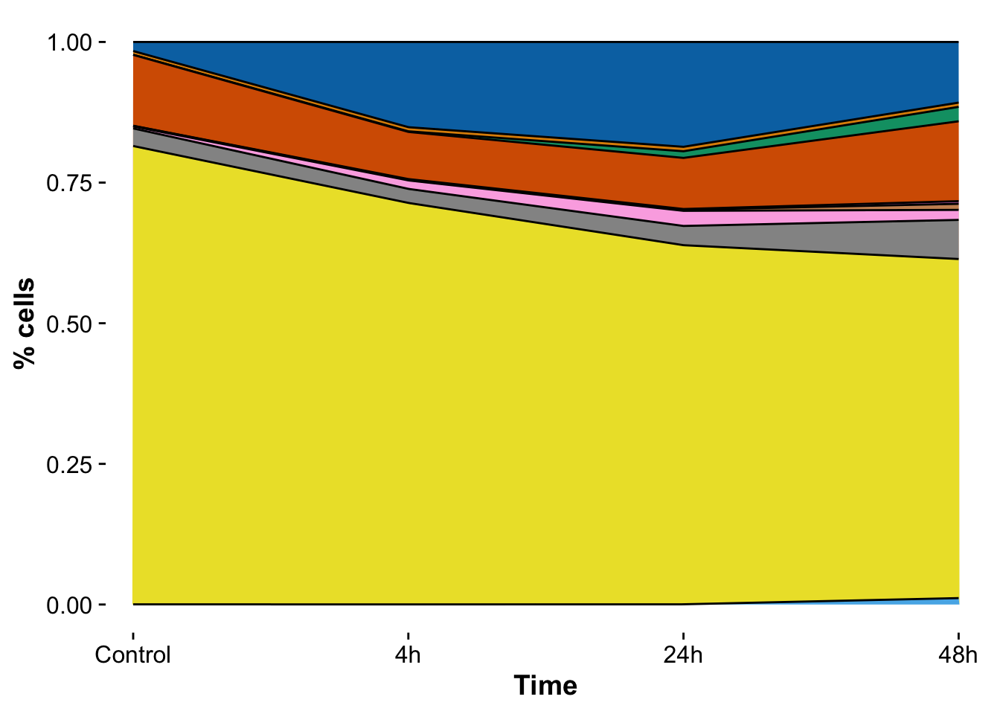
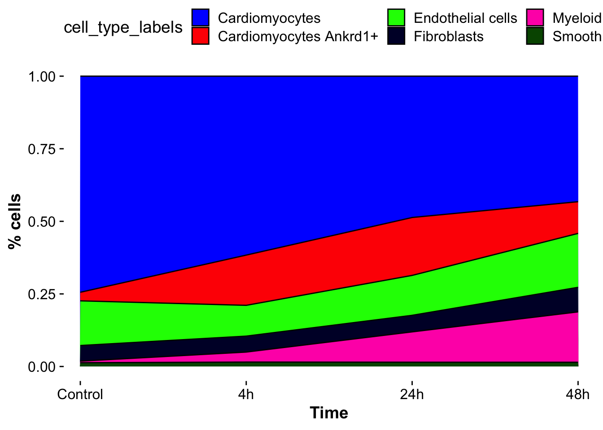

Last updated: 2023-08-24
Checks: 6 1
Knit directory: mi_spatialomics/
This reproducible R Markdown analysis was created with workflowr (version 1.7.0). The Checks tab describes the reproducibility checks that were applied when the results were created. The Past versions tab lists the development history.
The R Markdown is untracked by Git. To know which version of the R
Markdown file created these results, you’ll want to first commit it to
the Git repo. If you’re still working on the analysis, you can ignore
this warning. When you’re finished, you can run
wflow_publish to commit the R Markdown file and build the
HTML.
Great job! The global environment was empty. Objects defined in the global environment can affect the analysis in your R Markdown file in unknown ways. For reproduciblity it’s best to always run the code in an empty environment.
The command set.seed(20230612) was run prior to running
the code in the R Markdown file. Setting a seed ensures that any results
that rely on randomness, e.g. subsampling or permutations, are
reproducible.
Great job! Recording the operating system, R version, and package versions is critical for reproducibility.
Nice! There were no cached chunks for this analysis, so you can be confident that you successfully produced the results during this run.
Great job! Using relative paths to the files within your workflowr project makes it easier to run your code on other machines.
Great! You are using Git for version control. Tracking code development and connecting the code version to the results is critical for reproducibility.
The results in this page were generated with repository version e8204f0. See the Past versions tab to see a history of the changes made to the R Markdown and HTML files.
Note that you need to be careful to ensure that all relevant files for
the analysis have been committed to Git prior to generating the results
(you can use wflow_publish or
wflow_git_commit). workflowr only checks the R Markdown
file, but you know if there are other scripts or data files that it
depends on. Below is the status of the Git repository when the results
were generated:
Ignored files:
Ignored: .DS_Store
Ignored: .Rhistory
Ignored: .Rproj.user/
Ignored: analysis/.DS_Store
Ignored: analysis/deprecated/.DS_Store
Ignored: data/.DS_Store
Ignored: data/140623.calcagno_et_al.seurat_object.rds
Ignored: data/molkart_tissue_regions_rois/.DS_Store
Ignored: figures/.DS_Store
Ignored: omnipathr-log/
Ignored: output/.DS_Store
Ignored: output/figure3.pixie_cell_cluster_heatmap.png
Ignored: output/figure3.pixie_pixel_cluster_heatmap.png
Ignored: output/figure3.pixie_pixel_cluster_heatmap.tiff
Ignored: output/harmony.molkart.h5Seurat
Ignored: output/lunaphore_images/
Ignored: output/mol_cart/
Ignored: output/molkart_cell_types/
Ignored: output/proteomics/
Ignored: output/seqIF/
Ignored: plots/.DS_Store
Ignored: plots/Figure1.umap_plot.pdf
Ignored: references/.DS_Store
Ignored: renv/.DS_Store
Ignored: renv/library/
Ignored: renv/staging/
Untracked files:
Untracked: analysis/__pycache__/
Untracked: analysis/deprecated/molkart.quantify_cells_in_regions.ipynb
Untracked: analysis/deprecated/napari_points.ipynb
Untracked: analysis/deprecated/roi.csv
Untracked: analysis/deprecated/roi2.csv
Untracked: analysis/deprecated/test_construct_spatialdata.ipynb
Untracked: analysis/figures.deep_visual_proteomics.Rmd
Untracked: analysis/mol_cart.QC_spots.Rmd
Untracked: analysis/mol_cart.molkart.Figure1.Rmd
Untracked: analysis/mol_cart.molkart.process_quantifications_seurat.Rmd
Untracked: analysis/molecular_cartography_python/
Untracked: analysis/seqIF.heatmaps_pixie.figure3.Rmd
Untracked: analysis/seqIF_python/
Untracked: analysis/spatialMI_functions.py
Untracked: data/Calcagno2022_int_logNorm_annot.h5Seurat
Untracked: data/pixie.cell_table_size_normalized_cell_labels.csv
Untracked: plots/Figure3.cell_types_overtimes.pdf
Untracked: plots/Figure3.pixel_clusters_overtimes.pdf
Untracked: references/mol_cart.heart_regions/
Unstaged changes:
Modified: .gitignore
Modified: analysis/data_analysis.Rmd
Modified: analysis/data_processing.Rmd
Modified: analysis/figures.Rmd
Deleted: analysis/figures.figure_5.Rmd
Modified: analysis/figures.supplementary_figure_X.proteomics_qc.Rmd
Deleted: analysis/molkart.Figure1.Rmd
Deleted: analysis/molkart.QC_spots.Rmd
Deleted: analysis/molkart.process_quantifications_seurat.Rmd
Modified: analysis/proteomics.bulk_de_analysis.Rmd
Modified: analysis/proteomics.filter_proteomic_data.Rmd
Modified: analysis/proteomics.pathway_enrichment_analysis.Rmd
Modified: analysis/proteomics.scRNAseq_comparison.Rmd
Deleted: analysis/python/lunaphore.figure_3.create_pixie_images.ipynb
Deleted: analysis/python/lunaphore.figure_3.pixie_heatmaps.ipynb
Deleted: analysis/python/molkart.count_spots_on_tissue.ipynb
Deleted: analysis/python/molkart.plot_MC_spots.ipynb
Deleted: analysis/python/molkart.plot_spots_figure1.ipynb
Deleted: analysis/python/molkart.quantify_cells_in_regions.ipynb
Deleted: analysis/python/napari_points.ipynb
Deleted: analysis/python/roi.csv
Deleted: analysis/python/roi2.csv
Deleted: analysis/python/spatialMI_functions.py
Deleted: analysis/python/test_construct_spatialdata.ipynb
Deleted: data/molkart.spots_per_tissue.tsv
Modified: figures/Figure_5.eps
Modified: figures/Figure_5.pdf
Modified: figures/Figure_5.png
Modified: figures/Figure_5.svg
Modified: output/molcart.misty_celltype_table.tsv
Deleted: output/molkart_segmentation_images/sample_control_r1_s1.DAPI_WGA.crop.png
Deleted: output/molkart_segmentation_images/sample_control_r1_s1.DAPI_WGA.crop.scale.png
Deleted: output/molkart_segmentation_images/sample_control_r1_s1.DAPI_WGA.roi.tif
Deleted: output/molkart_segmentation_images/sample_control_r1_s1.DAPI_WGA.tif
Deleted: output/molkart_segmentation_images/sample_control_r1_s1.DAPI_WGA_roi.crop.png
Deleted: output/molkart_segmentation_images/sample_control_r1_s1.DAPI_WGA_roi.crop.scale.png
Deleted: output/molkart_segmentation_images/sample_control_r1_s1.cellpose_full_image.outline.tif
Deleted: output/molkart_segmentation_images/sample_control_r1_s1.cellpose_full_image.roi.outline.tif
Deleted: output/molkart_segmentation_images/sample_control_r1_s1.cellpose_full_image.roi.tif
Deleted: output/molkart_segmentation_images/sample_control_r1_s1.cellpose_full_image.tif
Deleted: output/molkart_segmentation_images/sample_control_r1_s1.cellpose_mask.crop.png
Deleted: output/molkart_segmentation_images/sample_control_r1_s1.cellpose_mask.crop.scale.png
Deleted: output/molkart_segmentation_images/sample_control_r1_s1.cellpose_mask_roi.crop.png
Deleted: output/molkart_segmentation_images/sample_control_r1_s1.cellpose_mask_roi.crop.scale.png
Deleted: output/proteomics.filt_imputed_proteins.tsv
Deleted: output/proteomics.filtered_proteins.tsv
Deleted: output/proteomics.pca_res.rds
Deleted: output/proteomics.protein_missing_stats.tsv
Deleted: output/proteomics.vsn_norm_proteins.tsv
Modified: plots/Figure1.dotplot.pdf
Note that any generated files, e.g. HTML, png, CSS, etc., are not included in this status report because it is ok for generated content to have uncommitted changes.
There are no past versions. Publish this analysis with
wflow_publish() to start tracking its development.
library(pheatmap)
library(data.table)
library(viridis)Loading required package: viridisLitelibrary(RColorBrewer)
library(tidyverse)── Attaching core tidyverse packages ──────────────────────── tidyverse 2.0.0 ──
✔ dplyr 1.1.2 ✔ readr 2.1.4
✔ forcats 1.0.0 ✔ stringr 1.5.0
✔ ggplot2 3.4.2 ✔ tibble 3.2.1
✔ lubridate 1.9.2 ✔ tidyr 1.3.0
✔ purrr 1.0.1 ── Conflicts ────────────────────────────────────────── tidyverse_conflicts() ──
✖ dplyr::between() masks data.table::between()
✖ dplyr::filter() masks stats::filter()
✖ dplyr::first() masks data.table::first()
✖ lubridate::hour() masks data.table::hour()
✖ lubridate::isoweek() masks data.table::isoweek()
✖ dplyr::lag() masks stats::lag()
✖ dplyr::last() masks data.table::last()
✖ lubridate::mday() masks data.table::mday()
✖ lubridate::minute() masks data.table::minute()
✖ lubridate::month() masks data.table::month()
✖ lubridate::quarter() masks data.table::quarter()
✖ lubridate::second() masks data.table::second()
✖ purrr::transpose() masks data.table::transpose()
✖ lubridate::wday() masks data.table::wday()
✖ lubridate::week() masks data.table::week()
✖ lubridate::yday() masks data.table::yday()
✖ lubridate::year() masks data.table::year()
ℹ Use the conflicted package (<http://conflicted.r-lib.org/>) to force all conflicts to become errorslibrary(pals)
Attaching package: 'pals'
The following objects are masked from 'package:viridis':
cividis, inferno, magma, plasma, turbo, viridis
The following objects are masked from 'package:viridisLite':
cividis, inferno, magma, plasma, turbo, viridislibrary(vroom)
Attaching package: 'vroom'
The following objects are masked from 'package:readr':
as.col_spec, col_character, col_date, col_datetime, col_double,
col_factor, col_guess, col_integer, col_logical, col_number,
col_skip, col_time, cols, cols_condense, cols_only, date_names,
date_names_lang, date_names_langs, default_locale, fwf_cols,
fwf_empty, fwf_positions, fwf_widths, locale, output_column,
problems, specpixel_map_color <- c("#0173B2", "#DE8F05", "#029E73", "#D55E00", "#CC78BC",
"#CA9161", "#FBAFE4", "#949494", "#ECE133", "#56B4E9")
cell_cluster_color <- glasbey()
source("./code/functions.R")
Attaching package: 'cowplot'
The following object is masked from 'package:lubridate':
stamp
here() starts at /Users/florian_wuennemann/1_Projects/MI_project/mi_spatialomicsavg_pixel_cluster <- fread("/Users/florian_wuennemann/1_Projects/MI_project/Lunaphore/pixie/masked_subset/subset_0.05_wseg/pixel_channel_avg_meta_cluster.csv")
avg_pixel_cluster <- avg_pixel_cluster %>%
subset(pixel_meta_cluster_rename != "background")mat_rownames <- avg_pixel_cluster$pixel_meta_cluster_rename
mat_rownames <- gsub("_","+ ",mat_rownames)
mat_rownames <- paste(mat_rownames,"pixels", sep = " ")
mat_dat <- avg_pixel_cluster %>%
dplyr::select(-c(pixel_meta_cluster,count,pixel_meta_cluster_rename))cap = 3 #hierarchical clustering cap
hclust_coln = "pixel_meta_cluster_rename"
rwb_cols = colorRampPalette(c("royalblue4","white","red4"))(99)
mat_dat = scale(mat_dat)
mat_dat = pmin(mat_dat, cap)
rownames(mat_dat) <- mat_rownames
# Determine breaks
range = max(abs(mat_dat))
breaks = seq(-range, range, length.out=100)
mat_col = data.frame(pixel_cluster = as.factor(mat_rownames))
rownames(mat_col) <- mat_rownames
mat_colors = pixel_map_color[1:length(mat_rownames)]
names(mat_colors) = mat_rownames
mat_colors = list(pixel_cluster = mat_colors)
# Make heatmap
pheatmap(mat_dat,
color = rwb_cols,
border_color = "black",
breaks = breaks,
cluster_rows = TRUE,
cluster_cols = TRUE,
treeheight_col = 25,
treeheight_row = 25,
#treeheight_col = 0,
show_rownames = TRUE,
annotation_row = mat_col,
annotation_colors = mat_colors,
annotation_names_row = FALSE,
annotation_legend = FALSE,
legend = TRUE,
#legend_breaks = c(-3,-2,-1,0,1,2,3),
#legend_labels = c("-3","-2","-1","0","1","2","3"),
main = "",
filename = "./output/figure3.pixie_pixel_cluster_heatmap.png",
fontsize = 20,
width = 8,
height = 6)
dev.off()null device
1 ## read in pixel cluster counts
pixel_counts = fread("/Users/florian_wuennemann/1_Projects/MI_project/Lunaphore/pixie/masked_subset/subset_0.05_wseg/pixel_counts.all_samples.csv")pixel_cluster_counts_stats <- pixel_counts %>%
subset(Pixel_cluster != "background") %>%
separate("Sample_ID", into = c("time","sample")) %>%
group_by(time,Pixel_cluster) %>%
summarise("n_pixel" = sum(Count)) %>%
mutate("percent" = n_pixel / sum(n_pixel)) %>%
ungroup()`summarise()` has grouped output by 'time'. You can override using the
`.groups` argument.pixel_cluster_counts_stats$time <-factor(pixel_cluster_counts_stats$time,
levels = c("Control","4h","24h","48h"))
pixel_cluster_counts_stats$time_cont <- as.numeric(pixel_cluster_counts_stats$time)#ggplot(cells_over_time, aes(x=time, y=percent, fill=cell_meta_cluster)) +
#geom_bar(stat = "identity", position = "stack",color = "black")
pixel_number_distribution <- ggplot(pixel_cluster_counts_stats,
aes(x=time_cont, y=percent)) +
geom_area(aes(fill = Pixel_cluster), color = "black") +
theme(legend.position = "none",
axis.line = element_blank()) +
scale_fill_manual(values = pixel_map_color) +
scale_x_discrete(expand = c(0,0.1),
name ="Time",
limits=c("Control","4h","24h","48h")) +
labs(y = "% cells")
pixel_number_distribution
save_plot(pixel_number_distribution,
file = "./plots/Figure3.pixel_clusters_overtimes.pdf",
base_height = 3.5,
base_asp = 1)avg_cell_cluster <- fread("/Users/florian_wuennemann/1_Projects/MI_project/Lunaphore/pixie/masked_subset/cell_masks_0.05/cell_meta_cluster_channel_avg.csv")
avg_cell_cluster <- avg_cell_cluster %>%
subset(cell_meta_cluster_rename != "background")mat_rownames <- avg_cell_cluster$cell_meta_cluster_rename
mat_rownames <- gsub("_","+ ",mat_rownames)
mat_dat <- avg_cell_cluster %>%
dplyr::select(-c(cell_meta_cluster,cell_meta_cluster_rename))cap = 3 #hierarchical clustering cap
hclust_coln = "pixel_meta_cluster_rename"
rwb_cols = colorRampPalette(c("royalblue4","white","red4"))(99)
mat_dat = scale(mat_dat)
mat_dat = pmin(mat_dat, cap)
rownames(mat_dat) <- mat_rownames
# Determine breaks
range = max(abs(mat_dat))
breaks = seq(-range, range, length.out=100)
mat_col = data.frame(pixel_cluster = as.factor(mat_rownames))
rownames(mat_col) <- mat_rownames
mat_colors = cell_cluster_color[1:length(mat_rownames)]
names(mat_colors) = mat_rownames
mat_colors = list(pixel_cluster = mat_colors)
# Make heatmap
pheatmap(mat_dat,
color = rwb_cols,
border_color = "black",
breaks = breaks,
cluster_rows = TRUE,
cluster_cols = TRUE,
treeheight_col = 25,
treeheight_row = 25,
#treeheight_col = 0,
show_rownames = TRUE,
annotation_row = mat_col,
annotation_colors = mat_colors,
annotation_names_row = FALSE,
annotation_legend = FALSE,
legend = TRUE,
#legend_breaks = c(-3,-2,-1,0,1,2,3),
#legend_labels = c("-3","-2","-1","0","1","2","3"),
main = "",
filename = "./output/figure3.pixie_cell_cluster_heatmap.png",
fontsize = 20,
width = 8,
height = 6)
dev.off()null device
1 cells_over_time <- fread("./data/pixie.cell_table_size_normalized_cell_labels.csv")
cells_over_time <- cells_over_time %>%
mutate("cell_type_labels" = if_else(grepl("Myeloid",cell_meta_cluster),"Myeloid cells",cell_meta_cluster))
cells_over_time <- cells_over_time %>%
subset(cell_type_labels != "background") %>%
separate("fov", into = c("time","sample")) %>%
group_by(time,cell_type_labels) %>%
tally() %>%
ungroup()cells_over_time <- cells_over_time %>%
group_by(time) %>%
mutate("percent" = n / sum(n)) %>%
ungroup()cells_over_time$time <-factor(cells_over_time$time,
levels = c("Control","4h","24h","48h"))
cells_over_time$time_cont <- as.numeric(cells_over_time$time)#ggplot(cells_over_time, aes(x=time, y=percent, fill=cell_meta_cluster)) +
#geom_bar(stat = "identity", position = "stack",color = "black")
mat_colors = cell_cluster_color[1:length(mat_rownames)]
cell_number_distribution <- ggplot(cells_over_time, aes(x=time_cont, y=percent)) +
geom_area(aes(fill = cell_type_labels), color = "black") +
theme(legend.position = "top",
axis.line = element_blank()) +
scale_fill_manual(values = mat_colors) +
scale_x_discrete(expand = c(0,0.1),
name ="Time",
limits=c("Control","4h","24h","48h")) +
labs(y = "% cells")
cell_number_distribution
save_plot(cell_number_distribution,
file = "./plots/Figure3.cell_types_overtimes.pdf",
base_height = 3.5,
base_asp = 1)
sessionInfo()R version 4.2.3 (2023-03-15)
Platform: aarch64-apple-darwin20 (64-bit)
Running under: macOS Ventura 13.5
Matrix products: default
BLAS: /Library/Frameworks/R.framework/Versions/4.2-arm64/Resources/lib/libRblas.0.dylib
LAPACK: /Library/Frameworks/R.framework/Versions/4.2-arm64/Resources/lib/libRlapack.dylib
locale:
[1] en_US.UTF-8/en_US.UTF-8/en_US.UTF-8/C/en_US.UTF-8/en_US.UTF-8
attached base packages:
[1] stats graphics grDevices datasets utils methods base
other attached packages:
[1] here_1.0.1 ggsci_3.0.0 cowplot_1.1.1 vroom_1.6.3
[5] pals_1.7 lubridate_1.9.2 forcats_1.0.0 stringr_1.5.0
[9] dplyr_1.1.2 purrr_1.0.1 readr_2.1.4 tidyr_1.3.0
[13] tibble_3.2.1 ggplot2_3.4.2 tidyverse_2.0.0 RColorBrewer_1.1-3
[17] viridis_0.6.4 viridisLite_0.4.2 data.table_1.14.8 pheatmap_1.0.12
[21] workflowr_1.7.0
loaded via a namespace (and not attached):
[1] httr_1.4.6 sass_0.4.7 maps_3.4.1
[4] bit64_4.0.5 jsonlite_1.8.7 bslib_0.5.0
[7] getPass_0.2-2 BiocManager_1.30.21.1 highr_0.10
[10] renv_1.0.0 yaml_2.3.7 pillar_1.9.0
[13] glue_1.6.2 digest_0.6.33 promises_1.2.0.1
[16] colorspace_2.1-0 htmltools_0.5.5 httpuv_1.6.11
[19] pkgconfig_2.0.3 scales_1.2.1 processx_3.8.2
[22] whisker_0.4.1 later_1.3.1 tzdb_0.4.0
[25] timechange_0.2.0 git2r_0.32.0 generics_0.1.3
[28] farver_2.1.1 cachem_1.0.8 withr_2.5.0
[31] cli_3.6.1 magrittr_2.0.3 crayon_1.5.2
[34] evaluate_0.21 ps_1.7.5 fs_1.6.3
[37] fansi_1.0.4 textshaping_0.3.6 tools_4.2.3
[40] hms_1.1.3 lifecycle_1.0.3 munsell_0.5.0
[43] callr_3.7.3 compiler_4.2.3 jquerylib_0.1.4
[46] systemfonts_1.0.4 rlang_1.1.1 grid_4.2.3
[49] dichromat_2.0-0.1 rstudioapi_0.15.0 labeling_0.4.2
[52] rmarkdown_2.23 gtable_0.3.3 R6_2.5.1
[55] gridExtra_2.3 knitr_1.43 fastmap_1.1.1
[58] bit_4.0.5 utf8_1.2.3 rprojroot_2.0.3
[61] ragg_1.2.5 stringi_1.7.12 Rcpp_1.0.11
[64] vctrs_0.6.3 mapproj_1.2.11 tidyselect_1.2.0
[67] xfun_0.39